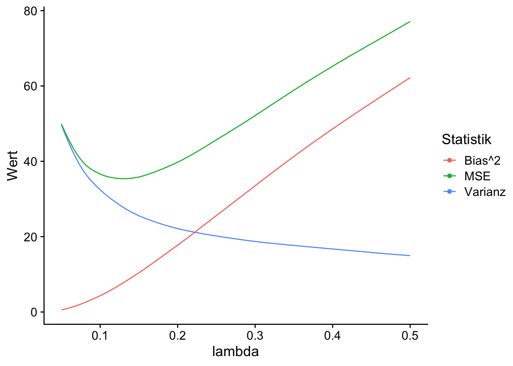

13 Regularisierte Regression
In diesem Kapitel betrachten wir Varianten von Koeffizientenschätzern im linearen Modell \[\begin{align} Y_i = \beta_1 X_{1,i} + \dots + \beta_k X_{k,i} + u_i, \quad i = 1,\dots,n,\label{eq:slm} \end{align}\] deren Motivation die Schätzung von \(\boldsymbol{\beta} := (\beta_1, \dots,\beta_k)'\) in Anwendungen ist, in denen der KQ-Schätzer \[\begin{align} \begin{split} \widehat{\boldsymbol{\beta}} =&\, \arg\min_{\boldsymbol{\beta}}\mathrm{RSS}(\boldsymbol{\beta})\\ =&\, \arg\min_{\boldsymbol{\beta}} \sum_{i=1}^n\left(Y_i-\beta_1 X_{1,i} + \dots + \beta_k X_{k,i}\right)^2 \end{split}\label{eq:KQLoss} \end{align}\] keine stabile Schätzung zulässt oder nicht eindeutig definiert ist, und damit gar nicht erst berechnet werden kann. Solche Szenarien ergeben sich in der empirischen Forschung, wenn die Regressoren stark korreliert sind und/oder das Modell viele Regressoren enthält (\(k\lesssim n\)), oder das Regressionsproblem hoch-dimensional ist (\(k>n\)).
Regularisierte Regressionsschätzer begegnen dieser Problematik mit einer Modifikation der Verlustfunktion \(\mathrm{RSS}\) in \(\eqref{eq:KQLoss}\), \[\begin{align} \mathrm{RSS}(\boldsymbol{\beta}, p, \lambda) := \mathrm{RSS}(\boldsymbol{\beta}) + \lambda\lVert\boldsymbol{\beta}\rVert_p. \end{align}\] Hierbei ist \(\lambda>0\) ein Tuning-Parameter und \(p\geq1\) definiert die \(p\)-Norm des Koeffizientenvektors, \[\begin{align} \lVert\boldsymbol{\beta}\rVert_p := \left(\sum_{j=1}^k \lvert\beta_j\rvert^{p}\right)^{1/p}>0.\label{eq:pnorm} \end{align}\]
Wegen \(\lambda\lVert\boldsymbol{\beta}\rVert_p>0\) kann die \(p\)-Norm des Koeffizientenvektors \(\boldsymbol{\beta}\) das Optimierungsproblem \[\min_{\boldsymbol{\beta}} \mathrm{RSS}(\boldsymbol{\beta}, p, \lambda) \vert\, p,\, \lambda\] derart restringieren, dass die geschätzten Koeffizienten \[\begin{align*} \widehat{\boldsymbol{\beta}}_{p,\,\lambda} := \arg\min_{\boldsymbol{\beta}} \mathrm{RSS}(\boldsymbol{\beta}, p, \lambda) \end{align*}\] im Erwartungswert absolut kleiner ausfallen als bei der KQ-Schätzung: Der Schätzer ist in Richtung 0 verzerrt.1 Dieser Effekt der Regularisierung wird in der Literatur als Shrinkage bezeichnet.
1 Beachte, dass für \(\lambda=0\) die Verlustfunktion des KQ-Schätzers folgt.
2 D.h. wir wählen \(p\), um einen Schätzer mit für die konkrete Anwendung hilfreichen Eigenschaften zu erhalten.
Die grundlegenden Eigenschaften des Schätzers \(\widehat{\boldsymbol{\beta}}_{p,\,\lambda}\) werden maßgeblich durch den Parameter \(p\) bestimmt, der hinsichtlich des zu lösenden Regressionsproblems a priori gewählt wird.2
Shrinkage ist eine Motivation für die Anwendung regularisierter Schätzer in Modellen, die auch mit KQ geschätzt werden könnten. Um dies zu verstehen, nehmen wir an, dass die Gauss-Markov-Annahmen in \(\eqref{eq:slm}\) gelten. Dann hat der KQ-Schätzer die kleinste Varianz unter allen unverzerrten Schätzern. Aufgrund der Shrinkage fallen regularisierte Schätzer zwar nicht unter das Gauss-Markov-Theorem, können dafür aber eine geringere Varianz haben als KQ. Schätzer mit solchen Eigenschaften sind nützlich, wenn eine unverzerrte Schätzung von \(\boldsymbol{\beta}\) nicht unser primäres Ziel ist: Für Vorhersagen kann es hilfreich sein, etwas Verzerrung bei der Koeffizientenschätzung in Kauf zu nehmen, um eine hinreichend große Varianzreduktion zu erreichen, sodass ein geringerer erwarteter Vorhersagefehler als für KQ resultiert. Hierbei liegt, eine Abwägung zwischen Verzerrung und Varianz (Bias Variance Tradeoff) vor, der durch den Regularisierungsparameter \(\lambda\) beeinflusst wird.
Für die Berechnung des Schätzers in empirischen Anwendungen wird \(\lambda\) meist datengetrieben (mit Cross Validation oder einem Informationskriterium) geschätzt oder mit einer analytisch fundierten Faustregel gewählt.
Nachfolgend betrachten wir zwei häufig verwendete regularisierte Schätzer, die sich durch die Wahl \(p=1\) (Lasso Regression) bzw. \(p=2\) (Ridge Regression) ergeben und illustrieren ihre Anwendung mit R.
13.1 Ridge Regression
Ridge Regression wurde von Hoerl und Kennard (1970) als Alternative zur KQ-Schätzung bei hoch-korrelierten Regressoren eingeführt. Die Verlustfunktion lautet \[\begin{align} \mathrm{RSS}(\boldsymbol{\beta},p=2,\lambda) = \mathrm{RSS}(\boldsymbol{\beta}) + \lambda \lVert\boldsymbol{\beta}\rVert_2,\label{eq:ridgeloss} \end{align}\] d.h. der Parameter \(\lambda\) reguliert den Einfluss eines \(\ell_2\)-Strafterms \[\begin{align*} \lVert\boldsymbol{\beta}\rVert_2 = \sqrt{\sum_{j=1}^k\beta_j^2} \end{align*}\] auf die Verlustfunktion \(\mathrm{RSS}(\boldsymbol{\beta},p=2,\lambda)\). Der Ridge-Schätzer ergibt sich als \[\begin{align} \widehat{\boldsymbol{\beta}}^{\mathrm{R}}_\lambda := \arg\min_{\boldsymbol{\beta}}\mathrm{RSS}(\boldsymbol{\beta}) + \lambda \lVert\boldsymbol{\beta}\rVert_2.\label{eq:ridgereg} \end{align}\]
Für Das Optimierungsproblem \(\eqref{eq:ridgereg}\) kann wir aus den Bedingungen 1. Ordnung \[\begin{align} -2\boldsymbol{X}'(\boldsymbol{Y} - \boldsymbol{X}\boldsymbol{\beta}) + 2\lambda\boldsymbol{\beta} = \boldsymbol{0} \end{align}\] die analytische Lösung \[\begin{align} \widehat{\boldsymbol{\beta}}^{\mathrm{R}}_\lambda = (\boldsymbol{X}'\boldsymbol{X} + \lambda\boldsymbol{I}_p)^{-1}\boldsymbol{X}'\boldsymbol{Y},\label{eq:ridgecf} \end{align}\] bestimmt werden, wobei \(\boldsymbol{I}_k\) die \(k\times k\) Einheitsmatrix ist. Aus Gleichung \(\eqref{eq:ridgecf}\) kann die Wirkungsweise des Strafterms \(\lambda \lVert\boldsymbol{\beta}\rVert_2\) abgeleitet werden: Ridge Regression modifiziert die Diagonale der zu invertierenden Matrix \(\boldsymbol{X}'\boldsymbol{X}\) durch Addition von \(\lambda>0\). Dies ist hilfreich, wenn
\(k\geq n\) und damit \(\boldsymbol{X}'\boldsymbol{X}\) nicht invertiertbar (singulär) ist. Dann kann der KQ-Schätzer nicht berechnet werden.3 Die Inverse \((\boldsymbol{X}'\boldsymbol{X} + \lambda\boldsymbol{I}_p)^{-1}\) hingegen existiert unter milden Bedingungen.
hohe Kollinearität vorliegt, sodass \((\boldsymbol{X}'\boldsymbol{X})^{-1}\) zwar existiert, aber zu einer instablilen KQ-Schätzung mit hoher Varianz führt.
3 Beispiel: X <- matrix(rnorm(100), ncol = 10). Vergleiche solve(t(X) %*% X) und solve(t(X) %*% X + diag(.01, nrow = 10))
Für eine grafische Betrachtung des Optimierungskalküls \(\eqref{eq:ridgereg}\) betrachten wir die äquivalente Darstellung als Lagrange-Problem \[\begin{align} \widehat{\boldsymbol{\beta}}^{\mathrm{R}}_\lambda := \arg\min_{\lVert\boldsymbol{\beta}\rVert<t}\mathrm{RSS}(\boldsymbol{\beta}).\label{eq:ridgeLg} \end{align}\] In der folgenden interaktiven Grafik illustrieren wir das Optimierungsproblem \(\eqref{eq:ridgeLg}\) sowie den resultierenden Schätzer der Koeffizienten \((\beta_1, \beta_2)\) in einem multiplen Regressionsmodell mit den Regressoren \(X_1\) und \(X_2\).
Die blaue Ellipse ist die Menge aller Schätzwerte \(\left(\widehat\beta_{1},\, \widehat\beta_{2}\right)\) für den angegebenen Wert von \(\mathrm{RSS}\). Im Zentrum der Ellipse liegt der KQ-Schätzer, welcher \(\mathrm{RSS}\) minimiert.
Der blaue Kreis ist die Menge aller Koeffizienten-Paare \((\beta_1, \beta_2)\), welche die Restriktion \(\beta_1^2 + \beta_2^2\leq t\) erfüllen. Beachte, dass die Größe des Kreises nur durch den Parameter \(t\) bestimmt wird, welcher für einen vorgegebenen Wertebereich variiert werden kann.
Der blaue Punkt ist der Ridge-Schätzer \((\widehat\beta^R_{1,t},\, \widehat\beta^R_{2,t})\). Dieser ergibt sich als Schnittpunkt zwischen der blauen \(\mathrm{RSS}\)-Ellipse und der Restriktionsregion und variiert mit \(t\). Die gestrichelte rote Kurve zeigt den Ridge-Lösungspfad.
Für kleine Werte \(t\) drückt die Shrinkage die geschätzten Koeffizienten Richtung 0, wobei der Lösungspfad i.d.R. nicht-linear verläuft, d.h. die Shrinkage auf den Koeffizienten ist grundsätzlich unterschiedlich. Die Lösung \((\widehat\beta^R_{1,t},\, \widehat\beta^R_{2,t}) = (0,0)\) existiert nur als Grenzwert für \(t\to0\).
Beachte, dass der Effekt von \(t\) auf die Schätzung umgekehrt für \(\lambda\) verläuft: Größere \(\lambda\) führen zu stärkerer Regularisierung.
13.1.1 Eigenschaften des Schätzers
Der Ridge-Schätzer \(\widehat{\boldsymbol{\beta}}^{\mathrm{R}}_\lambda\) ist nicht invariant gegenüber der Skalierung der Regressoren. Für empirische Daten sollte daher vorab eine Standardisierung der erklärenden Variablen durchgeführt werden.4 Um die Eigenschaften des Ridge-Schätzers besser zu verstehen, betrachten wir hier den Fall orthonormaler Regressoren \(\boldsymbol{X}_j\).5 Dann ist \[\begin{align} \widehat{\beta}^{\mathrm{R}}_{\lambda,\,j} = (1+\lambda)^{-1} \cdot\widehat{\beta}_j,\quad j = 1,\dots,k,\label{eq:ridgeortho} \end{align}\] d.h. der Ridge-Schätzer skaliert die KQ-Lösung mit einem von \(\lambda\) abhängigen Faktor.6
4 Bspw. mit der Funktion scale().
5 Orthonormalität heißt \(\boldsymbol{X}_i'\boldsymbol{X}_j = 1\) für \(i=j\) und \(0\) sonst. Dann ist \(\boldsymbol{X}\)’\(\boldsymbol{X} = \boldsymbol{I}_k\).
6 \((1+\lambda)^{-1}\) wird auch als Shrinkage-Faktor bezeichnet.
Wir illustrieren dies, indem wir den Zusammenhang zwischen KQ- und Ridge-Schätzer im orthonormalen Fall als R-Funktion ridge_ortho() implementieren und für die Parameterwerte \(\lambda\in\{0,0.5,2\}\) plotten.
Die obige Grafik zeigt, dass der Ridge-Schätzer eine lineare Transformation des KQ-Schätzers (gestrichelte Linie) ist. Größere Werte des Regularisierungsparameters \(\lambda\) führen zu stärkerer Shrinkage des Koeffizientenschätzers in Richtung 0. Die \(\ell_2\)-Norm führt zu proportional zum Absolutwert des KQ-Schätzers verlaufender Shrinkage: Größere Koeffizienten werden stärker bestraft als kleine Koeffizienten.
Die Eigenschaft \[\mathrm{E}\left(\widehat{\boldsymbol{\beta}}^{\mathrm{R}}_{\lambda,\,j}\right) = (1+\lambda)^{-1} \cdot \beta_j\] zeigt, dass \(\widehat{\boldsymbol{\beta}}^{\mathrm{R}}_{\lambda,\,j}\) (für fixes \(\lambda>0\)) nicht erwartungstreu für \(\beta_j\) ist. Weiterhin ist \[\begin{align*} \mathrm{Var}\left(\widehat{\beta}^{\mathrm{R}}_{\lambda,\,j}\right) =&\, \mathrm{Var}\left(\widehat{\beta}_j\right) \cdot \left(\frac{\lambda}{1+\lambda^2}\right)\\ =&\, \sigma^2\cdot \left(\frac{\lambda}{1+\lambda^2}\right), \end{align*}\] wobei \(\sigma^2\) die Varianz des Regressionsfehlers \(u\) ist. Wegen \(\lambda<(1+\lambda)^2\) für \(\lambda>0\) gilt \[\mathrm{Var}\left(\widehat{\beta}^{\mathrm{R}}_{\lambda,\,j}\right)<\mathrm{Var}\left(\widehat{\beta}_j\right).\] Der Ridge-Schätzer hat also eine kleinere Varianz als der KQ-Schätzer. Diese Eigenschaften können auch für korrelierte Regressoren gezeigt werden.
13.1.2 Ridge Regression mit glmnet
Wir zeigen nun anhand simulierter Daten, wie der Ridge-Lösungspfad mit dem R-Paket glmnet berechnet werden kann. Wir erzeugen zunächst Daten gemäß der Vorschrift \[\begin{align}
\begin{split}
Y_i =&\, \boldsymbol{X}_i' \boldsymbol{\beta} + u_i,\\
\\
\beta_j =&\, \frac{5}{j^2}, \qquad\qquad\ j=1,\dots,5,\\
\beta_j =&\, -\frac{5}{(j-5)^2}, \quad j=6,\dots,10,\\
\\
\boldsymbol{X}_i \sim&\, N(\boldsymbol{0}, \boldsymbol{\Sigma}), \quad u_i \overset{u.i.v.}{\sim} N(0, 1), \quad i = 1,\dots,25.
\end{split} \label{eq:ridgedgp1}
\end{align}\] Hierbei wird \(\boldsymbol{\Sigma}\) so definiert, dass jeder Regressor \(N(0,1)\)-verteilt ist und eine Korrelation von \(0.8\) mit allen anderen Regressoren aufweist. Mit der Vorschrift für die \(\beta_j\) stellen wir sicher, dass es wenige Variablen gibt, die \(Y\) stark beeinflussen, da der Absolutbetrag der Koeffizienten in \(j\) abnimmt.7
7 Für bessere Interpretierbarkeit der Grafischen Auswertung, wählen wir positive und negative Koeffizienten mit gleichem Betrag.
Wir schätzen nun ein Modell mit allen k Regressoren mit glmnet. Beachte, dass für den Ridge-Strafterm alpha = 0 gesetzt werden muss.8
8 alpha ist ein Mischparameter im Algorithmus für elastic net, siehe ?glmnet.
Der Lösungspfad der Ridge-Schätzung kann nach Transformation der geschätzen Koeffizienten und der zugehörigen \(\lambda\)-Werte in ein langes Format überführt und komfortabel mit ggplot2 dargestellt werden.
Wir sehen den nicht-linearen Verlauf der Shrinkage auf den geschätzten Modellkoeffizienten in der Abbildung. Die Koeffizienten werden mit zunehmendem \(\lambda\) von der KQ-Lösung ausgehend (linkes Ende der Skala) in Richtung 0 gezwungen.
Über die Funktion cv.glmnet() kann ein optimales \(\lambda\) mit Cross Validation (CV) ermittelt werden. Ähnlich wie bei glmnet() wird für die Validierung automatisch eine \(\lambda\)-Sequenz erzeugt. Wir nutzen autoplot() aus dem R-Paket ggfortify für die Visualisierung der Ergebnisse mit ggplot2.
Der Plot zeigt ridge_cvfit$lambda.min, das optimale \(\lambda\) mit dem geringsten CV Mean-Squarred-Error (linke gestrichelte Linie) und ridge_cvfit$lambda.1se, das größte \(\lambda\), welches innerhalb einer Standardabweichung entfernt ist (rechte gestrichelte Linie).9 Wir berechnen die Schätzung für lambda.min.
9 Die Wahl von lambda.1se ist eine Heuristik, welche die Schätzunsicherheit berücksichtigt und zu einem “sparsameren” Modell tendiert.
Wir schätzen das Modell nun mit KQ und vergleichen die Koeffizienten mit der Ridge-Schätzung.
Der Vergleich in der obigen Abbildung zeigt deutlich, dass Ridge Regression im Vergleich mit KQ zu absolut kleineren Koeffizientenschätzungen tendiert. Inwiefern dies Konsequenzen für die Prognosegüte der Schätzung hat, können wir Anhand eines Testdatensatzes bestimmen. Hierzu vergleichen wir die mittleren Fehler (MSE) bei der Prognose von \(Y\) für die Beobachtungen im Testdatensatz. Für die Simulation des Testdatensatzes nutzen wir erneut die Vorschrift \(\eqref{eq:ridgedgp1}\) um N neue Beobachtungen zu erzeugen.
Für beide Methoden können wir predict() für die Prognosen von \(Y\) für den Testdatensatz (new_Y) nutzen.
Die Vorhersage für lm() benötigt dieselben Variablennamen wie im angepassten Modell, s. KQ_fit$coefficients.
Die Ergebnisse zeigen, dass der Ridge-Schätzer trotz seiner Verzerrung einen deutlich geringeren mittleren Vorhersagefehler für die Testdaten erzielt als der KQ-Schätzer. Diese Eigenschaft der Koeffizientenschätzung kann die Prognosegüte von Ridge Regression gegenüber der KQ-Regression verbessern.
13.1.3 Beispiel: Vorhersage von Abschlussnoten in Mathe
Zur Illustration von Ridge Regression nutzen wir den Datensatz SP aus Cortez und Silva (2008).10 SP enhält Beobachtungen zu Leistungen von insgesamt 100 Schülerinnen und Schülern im Fach Mathematik in der Sekundarstufe an zwei portugiesischen Schulen. Neben der Abschlussnote in Mathe (G3, Skala von 0 bis 20) beinhaltet SP diverse demografische, soziale und schulbezogene Merkmale, die mithilfe von Schulberichten und Fragebögen erhoben wurden. Ziel ist es, ein Modell für die Prognose von G3 anzupassen.
10 Wir verwenden eine Auszug aus dem Orignaldatensatz, der nebst ausführlicher Variablenbeschreibung hier verfügbar ist.
Wir lesen zunächst die Daten (im .csv-Format) ein.
Ein Überblick zeigt, dass der Großteil der Regressoren aus kategorialen Variablen mit sozio-ökonomischen Informationen besteht.
Um die Prognosegüte des Modells beurteilen zu können, partitionieren wir SP zufällig in einen Test- sowie einen Trainingsdatensatz (mit 30 und 70 Beobachtungen), jeweils für die Regressoren und die abhängige Variable.
Als nächstes passen wir ein Ridge-Regressionsmodell für alle Regressoren in SP_train an und ermitteln ein optimales \(\lambda\) mit Cross Validation. Beachte, dass cv.glmnet nicht für Regressoren im data.frame/tibble-Format ausgelegt ist, sondern ein matrix-Format erwartet. Wir transformieren SP_train daher mit data.matrix().
Wie für das Beispiel mit simulierten Daten erhalten wir mit predict() Vorhersagen für die erzielte Punktzahl. Beachte, dass wir den MSE nicht für die Trainingsdaten SP_train, sondern für die Testdaten SP_test berechnen.
Auch in diesem empirischen Beispiel zeigt ein Vergleich der MSEs, dass Ridge Regression dem KQ-Schätzer hinsichtlich der Vorhersagegüte überlegen ist.
Der MSE für Ridge ist mit deutlich kleiner als der MSE für KQ.
Für die Interpretation der Ridge-Schätzung erweitern den Code für die ggplot2-Grafik der Koeffizienten-Pfade um eine vertikale Linie des mit CV ermittelten \(\lambda\) und fügen mit dem Paket ggrepel Labels für die Pfade der größten Koeffizienten hinzu.
Der Plot gibt Hinweise darauf, dass neben der Schulzugehörigkeit und Indikatoren für schulische Leistung (bspw. failures) sozio-ökonomische Prädiktoren wie internet (Internetzugang zuhause), Pstatus (Zusammenleben der Eltern) und address/traveltime (sozialer Status) relevante Variablen zu sein scheinen.
Das optimale \(\lambda_\mathrm{cv}\) (gestrichelte rote Linie im letzten Plot) führt zu deutlicher Shrinkage, was eine mögliche Erklärung für den besseren Testset-MSE von Ridge Regression ist: Die Koeffizienten von Variablen mit wenig Erklärungskraft werden durch die Regularisierung in Richtung 0 gezwungen und reduzieren so die Varianz der Vorhersage gegenüber der (idealerweise) unverzerrten KQ-Schätzung.
Key Facts zu Ridge Regression
Ridge-Regression regularisiert den KQ-Schätzer mit der \(\ell_2\)-Norm der Koeffizienten. Diese Form von Regularisierung ist eine Alternative für KQ in Anwendungen mit mehr Regressoren als Beobachtugen (\(k\geq n\)) und/oder wenn KQ aufgrund starker Kollinearität eine hohe Varianz aufweist.
Der Ridge-Schätzer \(\widehat{\boldsymbol{\beta}}^{\mathrm{R}}_\lambda\) ist nicht erwartungstreu. Die geschätzten Koeffizienten sind auch für \(n\to\infty\) verzerrt.
Aufgrund der verzerrten Schätzung ist statistische Inferenz für Koeffizienten mit \(\widehat{\boldsymbol{\beta}}^{\mathrm{R}}_\lambda\) problematisch. Anstatt für strukturelle Modelle oder die Schätzung kausaler Effekte wird Ridge Regression in der Praxis daher überwiegend für Prognosen verwendet.
Die Wahl von \(\lambda\) impliziert einen Tradeoff zwischen Verzerrung und Varianz: Große \(\lambda\) schrumpfen die Koeffizientenschätzer Richtung 0 (mehr Verzerrung), führen aber zu einer kleineren Varianz der Schätzung. Entsprechend können Vorhersagen mit mehr Verzerrung aber weniger Varianz als mit KQ getroffen werden.
Ridge Regression kann in R mit dem Paket
glmnetberechnet werden.
13.2 Lasso Regression
Least Absolute Shrinkage and Selection Operator (Lasso) ist ein von Tibshirani (1996) vorgeschlagener Schätzer, der die Verlustfunktion des KQ-Schätzers um einen Strafterm für die Summe der (absoluten) Größe der Koeffizienten \(\boldsymbol\beta = (\beta_1, \dots,\beta_k)'\) erweitert. Die Verlustfunktion des Lasso-Schätzers von \(\boldsymbol{\beta}\) lautet \[\begin{align} \mathrm{RSS}(\boldsymbol{\beta},p=1,\lambda) = \mathrm{RSS}(\boldsymbol{\beta}) + \lambda \lVert\boldsymbol{\beta}\rVert_1. \label{eq:lassoloss} \end{align}\] Für den Strafterm wird also die \(\ell_1\)-norm \[ \lVert\boldsymbol{\beta}\rVert_1 = \sum_{j=1}^k \lvert\beta_j \rvert \] verwendet. Der Lasso-Schätzer \(\widehat{\boldsymbol{\beta}}^{\mathrm{L}}_\lambda\) für \(\boldsymbol{\beta}\) minimiert \(\eqref{eq:lassoloss}\), \[\begin{align} \boldsymbol{\beta}^{\mathrm{L}}_\lambda = \arg\min_{\boldsymbol{\beta}} \ \mathrm{RSS}(\boldsymbol{\beta},p=1,\lambda). \end{align}\] Entsprechend erhalten wir in Abhängigkeit von \(\lambda\) ein Kontinuum an Lösungen \[\begin{align} \left\{\widehat{\boldsymbol{\beta}}^{\mathrm{L}}_\lambda\right\}_{\lambda=0}^{\lambda=\infty}, \label{eq:LassoPath} \end{align}\] der sogenannte Lasso-Pfad.
Das Optimierungsproblem \(\eqref{eq:lassoloss}\) hat die äquivalente Darstellung \[\begin{align} \begin{split} \widehat{\boldsymbol{\beta}}^{\mathrm{L}}_\lambda =&\, \arg\min_{\boldsymbol{\beta}} \mathrm{RSS}(\boldsymbol{\beta}) + \lambda\left(\lVert\boldsymbol{\beta}\rVert_1 - t\right)\\ =&\, \arg\min_{\lVert\boldsymbol{\beta}\rVert_1\leq t} \mathrm{RSS}(\boldsymbol{\beta}), \end{split}\label{eq:lassolagrange} \end{align}\] welche über den Lagrange-Ansatz unter der Nebenbedingung \(\lVert\boldsymbol{\beta}\rVert_1 \leq t\) gelöst werden kann.
Ähnlich wie der KQ-Schätzer ist der Lasso-Schätzer \(\widehat{\boldsymbol{\beta}}^{\mathrm{L}}_\lambda\) durch Bedingungen 1. Ordnung bestimmt. Diese Bedingungen lassen sich komfortabel in Matrix-Schreibweise darstellen als \[\begin{align} -2\boldsymbol{X}_j'(\boldsymbol{Y} - \boldsymbol{X}\boldsymbol{\beta}) + \lambda\cdot\mathrm{sgn}(\beta_j) = 0, \quad j = 1,\dots,k.\label{eq:LassoFOC} \end{align}\] Aus Gleichung \(\eqref{eq:LassoFOC}\) folgt, dass der Lasso-Schätzer aufgrund des Strafterms im Allgemeinen nicht algebraisch bestimmt werden kann.11
11 Zur Bestimmung des Schätzers werden Algorithmen der nicht-linearen Optimierung genutzt.
In Abhängigkeit von \(\lambda\) zwingt der Lasso-Schätzer die KQ-Schätzung von \(\beta_j\) zu einem (absolut) kleineren Wert: Ähnlich wie bei Ridge Regression bewirkt der \(\ell_1\)-Strafterm eine mit \(\lambda\) zunehmende Schrumpfung der geschätzen Koeffizienten in Richtung 0. Charakteristisch für die Lösung des Lasso-Schätzers ist, dass \(\widehat{\boldsymbol{\beta}}^{\mathrm{L}}_j = 0\), wenn die Bedingung \[\begin{align} \left\lvert\boldsymbol{X}_j'(\boldsymbol{Y} - \boldsymbol{X}\widehat{\boldsymbol{\beta}}^{\mathrm{L}}_\lambda)\right\rvert - \lambda/2 \leq 0 \label{eq:lassoselection} \end{align}\] erfüllt ist. In Abhängigkeit von \(\lambda\) kann der Lasso-Schätzer folglich geschätzte Regressionskoeffizienten nicht nur in Richtung \(0\), sondern diese auch exakt mit \(0\) schätzen und damit Variablenselektion betreiben. Aufgrund der mit \(\lambda\) zunehmenden Shrinkage bis die Bedingung \(\eqref{eq:lassoselection}\) erfüllt und der Koeffizient gleich \(0\) gesetzt wird, bezeichnet man Lasso auch als einen Soft Thresholding Operator. Im nächsten Abschnitt betrachten wir die Eigenschaften von Lasso-Regularisierung unter vereinfachten Annahmen bzgl. der Regressoren.
13.2.1 Lasso ist Soft Thresholding
Wir betrachten nun eine mathematische Darstellung von Selektions- und Shrinkage-Eigenschaft des Lasso-Schätzers in einem vereinfachten Modell. Wenn die Regressoren \(\boldsymbol{X}\) orthonormal zueinander sind, existiert eine analytische Lösung des Lasso-Schätzers, \[\begin{align}
\widehat{\boldsymbol{\beta}}^{\mathrm{L}}_\lambda =
\begin{cases}
\widehat{\boldsymbol{\beta}}_j - \lambda/2 &, \ \ \widehat{\boldsymbol{\beta}}_j > \lambda/2\\
0 &, \ \ \lvert\widehat{\boldsymbol{\beta}}_j\rvert\leq\lambda/2\\
\widehat{\boldsymbol{\beta}}_j + \lambda/2 &, \ \ \widehat{\boldsymbol{\beta}}_j < \lambda/2
\end{cases},\label{eq:lassoST}
\end{align}\] wobei \(\widehat{\boldsymbol{\beta}}_j\) der KQ-Schätzer von \(\beta_j\) ist. Anhand von \(\eqref{eq:lassoST}\) können wir die Selektionseigenschaft sowie die Schrumpfung der KQ-Koeffizientenschätzung in Abhängigkeit der durch \(\lambda\) regulierten \(\ell_1\)-Strafe erkennen. Für eine Visualisierung implementieren wir \(\eqref{eq:lassoST}\) als R-Funktion lasso_st() und zeichnen die resultierenden Koeffizientenschätzungen für die Parameterwerte \(\lambda\in\{0, 0.2, 0.4\}\).
Wir definieren zunächst die Funktion lasso_st().
Im nächsten Schritt zeichnen wir lasso_st() für eine Sequenz von KQ-Schätzwerten gegeben \(\lambda\).
Der Plot zeigt, dass der \(\ell_1\)-Strafterm des Lasso-Schätzers zu einem linearen Verlauf der auf den KQ-Schätzer (gezeichnet für \(\lambda = 0\), gestrichelte Linie) applizierten Shrinkage führt: Der Lasso-Schätzer ist eine abschnittsweise-lineare Funktion des KQ-Schätzers in \(\lambda\): Je größer der Parameter \(\lambda\), desto größer ist das Intervall von KQ-Schätzwerten \([-\lambda/2,\lambda/2]\), wo der Lasso-Schätzer zu Variablenselektion führt, d.h. hier den Koeffizienten \(\beta_j\) als \(0\) schätzt (rote bzw. blaue Linie).
Anhand des Plots kann weiterhin abgeleitet werden, dass der Lasso-Schätzer nicht invariant gegenüber der Skalierung der Regressoren ist: Die Stärke der Regularisierung durch \(\lambda\) ist hängt von der Magnitude des KQ-Schätzers ab. Daher müssen die Regressoren vor Berechnung der Schätzung standardsiert werden. Üblich ist hierbei eine Normierung auf einen Mittelwert von \(0\) und eine Varianz von \(1\).
Die nachstehende interaktive Grafik illustriert das Lasso-Optimierungsproblem \(\eqref{eq:lassolagrange}\) sowie den resultierenden Schätzer der Koeffizienten \((\beta_1, \beta_2)\) in einem multiplen Regressionsmodell mit korrelierten Regressoren \(X_1\) und \(X_2\).
Die blaue Ellipse ist die Menge aller Schätzwerte \(\left(\widehat\beta_{1},\, \widehat\beta_{2}\right)\) für den angegebenen Wert von \(\mathrm{RSS}\). Im Zentrum der Ellipse liegt der KQ-Schätzer, welcher \(\mathrm{RSS}\) minimiert.
Das graue Quadrat ist die Menge aller Koeffizienten-Paare \((\beta_1, \beta_2)\), welche die Restriktion \(\lvert\beta_1\rvert+\lvert\beta_2\rvert\leq t\) erfüllen. Beachte, dass die Größe dieser Region nur durch den Parameter \(t\) bestimmt wird.
Der blaue Punkt ist der Lasso-Schätzer \((\widehat{\boldsymbol{\beta}}^L_{1,t},\, \widehat{\boldsymbol{\beta}}^L_{2,t})\). Dieser ergibt sich als Schnittpunkt zwischen der blauen \(\mathrm{RSS}\)-Ellipse und der Restriktionsregion und variiert mit \(t\). Die gestrichelte rote Linie zeigt den Lasso-Lösungspfad.
Für kleine Werte, erhalten wir starke Shrinkage auf \(\widehat\beta_{1,t}\) bis zum Wertebereich \(t\leq50\), wo \(\widehat{\boldsymbol{\beta}}^L_{1,t}=0\). Hier erfolgt Variablenselektion: Die Regularisierung führt zu einem geschätzten Modell, das lediglich \(X_2\) als erklärende Variable enthält. In diesem Bereich von \(t\) bewirkt die Shrinkage, dass \(\widehat{\boldsymbol{\beta}}^L_{2,t}\to0\) für \(t\to0\).
Beachte, dass der rote Lasso-Pfad (die Menge aller Lasso-Lösungen) äquivalent als Funktion von \(\lambda\) im Optimierungsproblem \(\eqref{eq:lassoloss}\) dargestellt werden kann. Implementierungen mit statistischer Software berechnen die Lasso-Lösung häufig in Abhängigkeit von \(\lambda\). Ein Algorithmus hierfür ist LARS.
13.2.2 Berechnung der Lasso-Lösung mit dem LARS-Algorithmus
Für die Berechnung des Lasso-Lösungspfads kann der LARS-Algorithmus von Efron u. a. (2004) im Lasso-Modus genutzt werden.12 Der Lasso-Lösungspfad beinhaltet geschätzte Koeffizienten über einem Intervall für \(\lambda\), welches sämtliche Modellkomplexitäten zwischen der (trivialen) Lösung mit maximaler Shrinkage auf allen Koeffizienten (\(\lambda\) groß, alle gesch. Koeffizienten sind \(0\)) und der unregularisierten Lösung (\(\lambda = 0\), KQ-Schätzung) abbildet. Der LARS-Algorithmus erzeugt den Lösungspfad sequentiell, sodass die Schätzung als Funktion von \(\lambda\) veranschaulicht werden kann, ähnlich wie bei Ridge Regression.
12 LARS steht für Least Angle Regression and Selection.
Wir zeigen nun anhand simulierter Daten, wie Lasso-Lösungen mit dem R-Paket lars berechnet werden können. Hierfür erzeugen wir Daten gemäß der Vorschrift \[\begin{align}
\begin{split}
Y_i =&\, \boldsymbol{X}_i' \boldsymbol{\beta}_v + u_i\\
\\
\boldsymbol{\beta}_v =&\, (-1.25, -.75, 0, 0, 0, 0, 0, .75, 1.25)'\\
\\
\boldsymbol{X}_i \sim&\, N(\boldsymbol{0}, \boldsymbol{I}_{9\times9}), \quad u_i \overset{u.i.v.}{\sim} N(0, 1), \quad i = 1,\dots,25.
\end{split}\label{eq:larsdgp}
\end{align}\]
Entsprechend des DGP passen wir ein Modell ohne Konstante an. Damit lars::lars() den Lösungspfad des Lasso-Schätzers berechnet, muss type = "lasso" gewählt werden.13
13 lars() standardisiert die Regressoren standardmäßig (aufgrund des DGPs hier nicht nötig).
Die Zusammenfassung zeigt, dass der LARS-Algorithmus als erstes die (relevante) Variable \(X_9\) aktiviert.14 Mit abnehmender Regularisierung (kleinere \(\lambda\)) werden in den nächsten 3 Schritten die übrigen relevanten Variablen \(X_2\), \(X_8\) und \(X_1\) aktiviert. Über die weiteren Schritte nähert der Algorithmus die Lösung an die saturierte Schätzung (das Modell mit allen neun Regressoren) an und aktiviert schrittweise die übrigen, irrelevanten Variablen.
14 Aktivierung meint die Aufnahme einer Variable in der Modell gegeben eines hinreichend kleinen \(\lambda\).
Wir visualisieren die geschätzen Koeffizienten an jedem Schritt des Lösungspfads als Funktion von \(\lambda\). In der Praxis wird der Regularisierungsparameter häufig auf der natürlichen log-Skala dargestellt.
In der Abbildung erkennen wir, dass die Shrinkage der geschätzten Koeffizienten nach der Aktivierung rasch abnimmt und sich für kleine Werte von \(\lambda\) der KQ-Lösung annähert. Wir sehen auch, dass es einen Bereich von \(\lambda\)-Werten gibt, für die das wahre Modell mit den Variablen \(X_1\), \(X_2\), \(X_8\) und \(X_9\) selektiert werden kann. Je nach Ziel der Analyse kann es sinnvoll sein, ein \(\lambda\) in diesem Intervall zu schätzen.
13.2.3 Wahl des Regularisierungsparameters \(\lambda\) für den Lasso-Schätzer
Wie zuvor bei Ridge Regression muss in empirischen Anwendungen ein Wert für den Tuning-Parameter \(\lambda\) gewählt werden. Hierbei besteht die Herausforderung darin, einen geeigneten Wert zu finden, der zu wünschenswerten Eigenschaften des resultierenden Modells führt. So ist für gute Vorhersagen wichtig, dass das Modell nicht zu sehr an die Daten angepasst ist (Overfitting), um eine gute Generalisierung auf neue Daten zu ermöglichen. Gleichzeitig muss das Modell flexibel genug sein, um wesentliche Eigenschaften des daten-erzeugenden Prozesses hinreichend gut zu erfassen. In der Regel wird hierbei eine sparsame Modellierung angestrebt, die nur eine Teilmenge der Prädiktoren nutzt.
In der Praxis werden verschiedene Verfahren verwendet, um den Wert für den Tuning-Parameter \(\lambda\) zu bestimmen. Gängige Methoden sind Cross Validation (CV) und Informationskriterien. In Abhängigkeit der Methode und der Daten ergeben sich über- oder unterparameterisierte Modelle. Aufgrund der Implementierung im R-Paket lars betrachten wir nachfolgend CV.15 Wir zeigen nun anhand der simulierten Daten aus dem letzten Abschnitt, wie für die LARS-Schätzung ein optimales \(\lambda\) mit leave-one-out CV (LOO-CV) bestimmt werden kann. Hierzu nutzen wir lars::cv.lars() unter Verwendung derselben Argumente wie zuvor im Aufruf von lars().
15 Chetverikov, Liao, and Chernozhukov (2020) zeigen, dass CV zu konsistenter Modellselektion führen kann.
Das Objekt fit_lars_cv ist eine Liste mit den CV-Ergebnissen. Wir können diese einfach mit ggplot visualisieren. index ist hierbei das Verhältnis der \(\ell_1\)-Norm des Lasso-Schätzers für einen spezifischen Wert von \(\lambda\) und der \(\ell_1\)-Norm des KQ-Schätzers. Das optimale \(\lambda\) wird so implizit geschätzt. cv.error ist der mit CV geschätzte MSE.
In der Grafik erkennen wir ein Minimum des CV-MSEs bei etwa 0.73.
Die geschätzten Koeffizienten für die optimale Regularisierung können mit coef() ausgelesen werden.
Das Ergebnis veranschaulicht die Selektionseigenschaft von Lasso: Gemäß DGP \(\eqref{eq:larsdgp}\) sind die Variablen \(X_3\) bis \(X_7\) irrelevante Prädiktoren für \(Y\); ihre wahren Koeffizienten sind \(0\). In der kreuzvalidierten Lasso-Schätzung erreicht die Regularisierung, dass die Koeffizienten der Variablen \(X_4\) bis \(X_7\) tatsächlich mit 0 geschätzt werden. Wir schätzen für das mit CV bestimmte \(\lambda\) also ein leicht überspezifiziertes Modell mit den Regressoren \(X_1\), \(X_2\), \(X_3\), \(X_8\) und \(X_9\). Beachte, dass die Lasso-Schätzung einen Kompromiss impliziert: Die Varianz der Schätzung ist geringer als die des KQ-Schätzers im Modell mit allen Variablen.16 Aufgrund der Regularisierung sind die mit Lasso geschätzten Koeffizienten der relevanten Variablen jedoch in Richtung \(0\) verzerrt.
16 Wegen \(N=25\) verbleiben bei der KQ-Schätzung mit 9 Regressoren nur 16 Freiheitsgrade.
Einen positiven Effekt dieses Kompromisses beobachten wir anhand des mittleren Vorhersagefehlers für Daten, die nicht zur Berechnung des Schätzers verwendet wurden. Wir vergleichen den Vorhersagefehler nachfolgend anhand eines solchen simulierten Test-Datensatzes mit 25 neuen Beobachtungen. Den Vorhersagefehler bestimmen wir als MSE zwischen den vorhergesagten und den tatsächlichen Ausprägungen für \(Y\).
Wir schätzen nun das große Modell mit allen 9 Variablen mit KQ und berechnen ebenfalls den MSE der Prognosen für den Test-Datensatz.
Offenbar führt die Lasso-Schätzung zu einem deutlich geringeren MSE der Vorhersage von Y für den Test-Datensatz als die KQ-Schätzung und damit zu einer höheren Vorhersagegüte. Das “sparsame” mit Lasso-Regression geschätzte Modell ist dem “großen” mit KQ geschätztem Modell in dieser Hinsicht also überlegen.
Key Facts zu Lasso-Regression
Lasso-Regression bestraft die Verlustfunktion des KQ-Schätzers mit der \(\ell_1\)-Norm der Koeffizienten.
Neben Koeffizientenschätzung mit Shrinkage in Richtung \(0\) kann der Lasso-Schätzer Variablenselektion durchführen: Regressionskoeffizienten können exakt mit \(0\) geschätzt und so ein “sparsames”, leichter zu interpretierendes Modell gewählt werden.
Wie bei Ridge Regression impliziert die Wahl von \(\lambda\) einen Bias-Variance-Tradeoff, der für Vorhersagen nützlich ist: Für größere \(\lambda\) wird mehr Verzerrung induziert und möglicherweise relevante Variablen mit kleinen Koeffizienten aus dem Modell entfernt. Ein solches sparsames Modell kann eine höhere Prognosegüte haben als ein komplexes, unregularisiertes Modell.
Der Lasso-Schätzer \(\widehat{\boldsymbol{\beta}}_\lambda^L\) ist nicht erwartungstreu.
Lasso Regression kann bspw. mit dem LARS-Algorithmus (Paket
lars) oder mitglmnetberechnet werden.
13.3 Vergleich von Lasso- und Ridge-Regression mit Simulation
In diesem Kapitel illustrieren wir Vor- und Nachteile von Lasso- und Ridge-Regression in Prognose-Anwendungen anhand von Monte-Carlo-Simulationen. Wir betrachten hierbei datenerzeugende Prozesse, die sich hinsichtlich der Anzahl relevanter Variablen sowie der Korrelation dieser Variablen unterscheiden.17
17 Aufgrund des hohren Rechenaufwands der Simulationen verzichten wir in diesem Abschnitt und im nächsten Abschnitt auf die Einbindung der WebR-Konsole.
Die grundlegende Vorschrift für die Simulationen ist \[\begin{align*} Y_i = \sum_{j=1}^{k=40} \beta_j X_{i,j} + u_i, \quad u_i \overset{u.i.v.}{\sim} N(0,1), \quad i=1,\dots,100, \end{align*}\] wobei die Regressoren \(X_j\) eine Varianz von \(1\) haben und aus einer multivariaten Normalverteilung mit Korrelation \[\rho\in(0,0.5,0.8)\] gezogen werden.
Für die Koeffizienten \(\boldsymbol{\beta}\) unterscheiden wir zwei Szenarien. In Szenario A ist \[\boldsymbol{\beta} = (1,\dots,1)',\] d.h. alle Variablen sind relevant und haben denselben Einfluss auf \(Y\). In Szenario B erzeugen wir \(\boldsymbol{\beta}\) einmalig vorab so, dass \[\beta_j = \begin{cases}1,\quad \text{mit Wsk. }p\\ 0,\quad \text{mit Wsk. }1-p, \end{cases}\] d.h. nur eine Teilmenge der Variablen beeinflusst \(Y\) jeweils mit demselben Effekt \(\beta_j = 1\). Die übrigen Variablen sind irrelevant.
Als nächstes schätzen und validieren wir die Modelle mit glmnet().
13.3.1 Prognosegüte in diversen Szenarien
# Simulationsparameter definieren
rho <- c(0, 0.5, 0.8) # Korrelation
k <- 40 # Anz. Regressoren
N <- 100 # Anz. Beobachtungen
n_sim <- 100 # Anz. SimulationenDamit der Code für die Simulation möglichst wenig repetitiv ist, definieren wir eine Funktion cv.glmnet_MSE(), die unter Angabe der Daten X und Y, des Trainingssets train sowie des Parameters alpha den gewünschten regularisierten Schätzer under Verwendung von Cross Validation anpasst und den Testset-MSE zurückgibt.
# allg. Funktion für Testset-MSE nach CV
cv.glmnet_MSE <- function(X, Y, train, alpha) {
# Modell mit glmnet schätzen; lambda per CV bestimmen
fit_cv <- cv.glmnet(
x = X[train,],
y =Y[train],
alpha = alpha
)
# Vorhersagen treffen
Y_pred <- predict(
object = fit_cv,
s = fit_cv$lambda.min,
newx = X[-train,])
return(
# Testset-MSE berechnen
mean(
(Y[-train] - Y_pred)^2
)
)
}Wir initialisieren zunächst Matrizen, in welche die MSEs aus den n_sim Simulationsdurchläufen reihenweise geschrieben werden. lasso_mse und ridge_mse haben je eine Spalte für jede Korrelation in rho
Für die Simulation iterieren wir mit purrr::walk() über den Vektor rho sowie über die Laufvariable 1:n_sim. Beide Schleifen nutzen den Syntax für anonyme Funktionen:
In jedem Simulationsdurchlauf erzeugen wir den Datensatz entsprechend der obigen Vorschrift, teilen die Daten auf und berechnen MSEs für Lasso- und Ridge-Regression mit cv.glmnet_MSE().
Szenario A
# Koeffizienten-Vektor definieren
beta <- rep(1, k) library(mvtnorm)
library(tidyverse)
set.seed(1234)
# Simulation durchführen
walk(1:length(rho), \(j) {
# Korrelationsmatrix definieren
Sigma <- matrix(
data = rho[j],
nrow = k,
ncol = k
)
diag(Sigma) <- 1
walk(1:n_sim, \(i) {
# Daten simulieren
X <- rmvnorm(
n = N,
mean = rep(0, k),
sigma = Sigma
)
Y <- X %*% beta + rnorm(N)
# Trainingsdaten definieren
ID_train <- sample(
x = c(1:N),
size = N/2
)
# Modelle mit CV schätzen und MSEs berechnen
# Ridge-Regression
ridge_mse[i, j] <<- cv.glmnet_MSE(
X = X,
Y = Y,
train = ID_train,
alpha = 0
)
# Lasso-Regression
lasso_mse[i, j] <<- cv.glmnet_MSE(
X = X,
Y = Y,
train = ID_train,
alpha = 1
)
})
})Beachte, dass hier der Super-Assignment-Operator <<- genutzt wird, damit walk die Matrizen ridge_mse und lasso_mse in der globalen Umgebung überschreibt.18
18 Dies folgt aus der Definition von walk. <- bewirkt hier lediglich Assignment in der Funktionsumgebung.
Wir berechnen jeweils den mittleren MSEs, sammeln die Ergebnisse in einer tibble() und nutzen gt() für die tabellarische Darstellung.
library(gt)
# Ergebnisse tabellarisch darstellen
tibble(
Methode = c(
"Lasso-Regression",
"Ridge-Regression"
),
) %>%
bind_cols(
bind_rows(
colMeans(lasso_mse),
colMeans(ridge_mse)
)
) %>%
gt() %>%
tabopts()| Methode | Kor=0 | Kor=0.5 | Kor=0.8 |
|---|---|---|---|
| Lasso-Regression | NA | NA | NA |
| Ridge-Regression | NA | NA | NA |
Die Tabelle zeigt, dass Ridge-Regression gegenüber Lasso-Regression für jede der drei betrachteten Korrelationen überlegen ist. Insbesondere bei stärker korrelierten Regressoren ist Ridge vorteilhaft.
Für Szenario B überschreiben wir beta nach Multiplikation mit einem zufälligen binären Vektor, sodass einige der Koeffizienten \(0\) und die zugehörigen Variablen irrelevant für \(Y\) sind.
Szenario B
# Wsk. für Relevanz einer Variable
p <- .3
set.seed(123)
# Koeffizienten-Vektor definieren
beta <- beta * sample(
x = 0:1,
size = k,
replace = T,
prob = c(1-p, p)
)
# Koeffizienten prüfen
head(beta, n = 10) [1] 0 1 0 1 1 0 0 1 0 0Eine wiederholung der Simulation für die modifizierten Koeffizienten beta und liefert folgende tabellarische Auswertung.
| Methode | Kor=0 | Kor=0.5 | Kor=0.8 |
|---|---|---|---|
| Lasso | 7.17 | 10.398 | 7.581 |
| Ridge | 4.841 | 1.615 | 1.517 |
Die Ergebnisse in Tabelle 13.2 zeigen, dass Ridge-Regression in Szenario B bis auf den Fall unkorrelierter Regressoren etwas schlechter abschneidet als in Szenario A. Die hohe Anzahl irrelevanter Variablen verbessert die Leistung von Lasso deutlich: Hier ist es plausibel, dass Lasso aufgrund der Thresholding-Eigenschaft die Koeffizienten einiger irrelevanten Variablen häufig exakt \(0\) setzt und damit ein sparsameres Modell schätzt als Ridge. Entsprechend erzielt Lasso in diesem Szenario insbesondere für \(\rho = 0\) genauere Vorhersagen als Ridge Regression.
13.3.2 Visualisierung des Bias-Variance-Tradeoffs bei Prognosen
Für ein besseres Verständnis, wie sich der Regularisierungsparameter \(\lambda\) auf den Bias-Variance-Tradeoff bei Prognosen mit Ridge- und Lasso-Regression auswirkt, vergleichen wir für beide Methoden nachfolgend die Abhängigkeit des MSEs der Prognose \(\widehat{Y}_0\) für den Wert \(Y_0\) der abhängigen Variable eines Datenpunkts anhand seiner Regressoren \(\boldsymbol{X}_0'\), wobei \[\begin{align} \text{MSE}(\widehat{Y}_0) = \text{Bias}(\widehat{Y}_0)^2 + \text{Var}(\widehat{Y}_0) + \text{Var}(Y_0) \label{eq:pbvdecomp} \end{align}\] Beachte, dass \(\text{Var}(Y_0)\) die durch den datenerzeugenden Prozess (und damit unvermeidbare) Varianz von \(Y_0\) ist, wohingegen \(\text{Bias}(\widehat{Y}_0)^2\) und \(\text{Var}(\widehat{Y}_0)\) von dem verwendeten Schätzer für \(\widehat{Y}_0\) abhängt.
Für die Simulation betrachten wir erneut Szenario A aus Kapitel 13.3.1 mit \(50\) Beobachtungen für ein Modell mit \(40\) unkorrelierten Regressoren. Wir legen zunächst die Simulationsparameter fest und erzeugen den vorherzusagenden Datenpunkt (X_0, Y_0).
# Parameter festlegen
set.seed(1234)
n <- 200 # Anz. Iterationen
N <- 50 # Anz. Beobachtungen
k <- 40 # Anz. Variablen
# Korrelationsmatrix definieren
Sigma <- diag(k) # Diagonalmatrix
beta <- rep(x = 1, k)
# Prognose-Ziel vorab zufällig generieren:
# Regressoren
X_0 <- rmvnorm(
n = 1,
mean = rep(x = 0, k)
)
# Abh. Variable
Y_0 <- X_0 %*% beta + rnorm(n = 1) %>%
as.vector()Anhand der Simulationsergebnisse wollen wir die von der verwendeten Schätzfunktion abhängigen Komponenten von \(\eqref{eq:pbvdecomp}\) untersuchen. Wir initialisieren hierzu die Listen ridge_fits und lasso_fits, in die unsere Simulationsergebnisse geschrieben werden.
Weiterhin definieren wir separate \(\lambda\)-Sequenzen für Lasso- und Ridge-Schätzer.19
19 Die Sequenzen haben wir in Abhängigkeit des DGP so gewählt, dass die Abhängigkeit der Prognosegüte von \(\lambda\) gut visualisiert werden kann.
Für die Simulation iterieren wir mit walk() über simulierte Datensätze und schreiben jeweils den vollständigen Output von glmnet() in die zuvor definierten Listen ridge_fits und lasso_fits.
library(mvtnorm)
# Simulation
walk(1:n, \(i) {
# Daten simulieren
X <- rmvnorm(
n = N,
mean = rep(0, k),
sigma = Sigma
)
Y <- X %*% beta + rnorm(n = N, sd = 5)
# Modelle mit glmnet schätzen
# Ridge-Regression
ridge_fits[[i]] <<- glmnet(
x = X,
y = Y,
alpha = 0,
intercept = F
)
# Lasso-Regression
lasso_fits[[i]] <<- glmnet(
x = X,
y = Y,
alpha = 1,
intercept = F
)
})Wir nutzen Funktionen aus purrr und dplyr, um über die in den Simulationsdurchläufen angepassten Modelle zu iterieren. Mit predict() erhalten wir Punktvorhersagen für Y_0 für jedes \(\lambda\) der zuvor definierten \(\lambda\)-Sequenzen. Beachte, dass map() jeweils eine Liste mit 200 Punktvorhersagen für jedes der 100 zurückgibt. Mit list_rbind() können wir die Ergebnisse komfortabel jeweils in einer tibble sammeln.
# Prognosen für Ridge-Regression
pred_r <- map(
.x = ridge_fits,
.f = ~ as_tibble(
predict(
object = .,
s = lambdas_r,
newx = X_0
)
)
) %>%
list_rbind()
# Prognosen für Lasso-Regression
pred_l <- map(
.x = lasso_fits,
.f = ~ as_tibble(
predict(
object = .,
s = lambdas_l,
newx = X_0)
)
) %>%
list_rbind() Für die statistische Auswertung berechnen wir jeweils \(\text{MSE}(\widehat{Y}_0)\), \(\text{Bias}(\widehat{Y}_0)^2\) und \(\text{Var}(\widehat{Y}_0)\) und führen die Ergebnisse mit pivot_longer() in ein langes Format sim_data_r über. Wir berechnen weiterhin mit MSE_min_r das \(\lambda\), für das wir über die Simulationsdurchläufe durchschnittlich den geringsten \(\text{MSE}\) beobachten.
Ridge-Regression
# Ergebnisse für Ridge-Regression zusammenfassen
sim_data_r <- tibble(
lambda = lambdas_r,
"MSE" = map_dbl(
.x = pred_r,
.f = ~ mean((.x - Y_0)^2)
),
"Bias^2" = map_dbl(
.x = pred_r,
.f = ~ (mean(.x) - Y_0)^2
),
"Varianz" = map_dbl(
.x = pred_r,
.f = ~ var(.x)
)
) %>%
pivot_longer(
cols = -lambda,
values_to = "Wert",
names_to = "Statistik"
)
# Lambda bei MSE-Minimum bestimmen
MSE_min_r <- sim_data_r %>%
filter(
Statistik == "MSE",
Wert == min(Wert)
) Lasso-Regression
# Ergebnisse zusammenfassen
sim_data_l <- tibble(
lambda = lambdas_l,
"MSE" = map_dbl(
.x = pred_l,
.f = ~ mean((. - Y_0)^2)
),
"Bias^2" = map_dbl(
.x = pred_l,
.f = ~ (mean(.) - Y_0)^2
),
"Varianz" = map_dbl(
.x = pred_l,
.f = ~ var(.)
)
) %>%
pivot_longer(
cols = -lambda,
values_to = "Wert",
names_to = "Statistik"
)
# Lambda bei MSE-Minimum bestimmen
MSE_min_l <- sim_data_l %>%
filter(
Statistik == "MSE",
Wert == min(Wert)
) Die Datensätze im langen Format, sim_data_r und sim_data_l, werden nun für die Visualisierung der Ergebnisse mit ggplo2 genutzt.
# MSE, Bias^2 und Varianz gegen Lambda plotten
# Ridge-Regression
sim_data_r %>%
ggplot(
mapping = aes(
x = lambda,
y = Wert,
color = Statistik
)
) +
geom_line() +
geom_point(data = MSE_min_r) +
theme_cowplot()
# Lasso-Regression
sim_data_l %>%
ggplot(
mapping = aes(
x = lambda,
y = Wert,
color = Statistik
)
) +
geom_line() +
geom_point(data = MSE_min_l) +
theme_cowplot()

Anhand von Abbildung 13.1 lässt sich der Bias-Variance-Tradeoff bei der Vorhersage von \(Y_0\) gut erkennen: Bereits für kleine \(\lambda\) erzielen beide Methode eine deutliche Reduktion des MSE. Dies wir durch etwas zusätzlichen Bias, aber eine überproportionale Verringerung der Varianz erreicht. Der erkennbare funktionale Zusammenhang zeigt, dass der MSE eine konvexe Funktion von \(\lambda\) ist. Damit existieren optimale \(\lambda\) mit minimalem MSE (grüne Punkte), die wir mit Cross Validation schätzen können.
13.4 Inferenz für Treatment-Effekt-Schätzung mit vielen Variablen
In empirischen Studien des Effekts einer Behandlungsvariable \(B\) auf eine Outcome-Variable \(Y\) steht häufig eine Vielzahl potentieller Kontrollvariablen zur Verfügung. Häufig ist unklar, welche Variablen in das Modell aufgenommen werden sollten, um das Risiko einer verzerrten Schätzung durch ausgelassene Variablen zu vermindern und gleichzeitig eine Schätzung mit geringer Varianz zu gewährleisten. Ist der Beobachtungsumfang \(N\) relativ zur Variablenanzahl \(k\) groß, so kann die KQ-Schätzung einer langen Regression (ein Modell mit allen \(k\) Kontrollvariablen) gute Ergebnisse liefern. In der Praxis liegt diese wünschenswerte Situation jedoch oft nicht vor und es ist \(k\lesssim N\) oder sogar \(k>N\). Dann ist eine KQ-Schätzung des Behandlungseffekts anhand aller \(k\) Variablen mit hoher Varianz behaftet bzw. gar nicht möglich.20 Ein weiteres Szenario ist \(k(N)>N\), d.h. die Anzahl der Regressoren kann mit dem Beobachtungsumfang wachsen.21 Lasso-Verfahren können dann hilfreich sein, um Determinanten von \(Y\) und \(B\) zu identifizieren und damit eine Menge an Kontrollvariablen zu selektieren, für die eine erwartungstreue und konsistente Schätzung des interessierenden Effekts wahrscheinlich ist.
20 Beachte, dass der KQ-Schätzer bei \(k>N\) nicht lösbar ist.
21 Dieses Szenario wird unter Bedingungen bzgl. der Wachstumsrate und der Größe der Koeffizienten betrachet, siehe (Belloni und Chernozhukov 2013).
22 Hahn u. a. (2018) geben eine ausführliche Erläuterung dieser Problematik.
Betrachte zunächst das Modell mit allen Kontrollvariablen \(X_j\), \[\begin{align} Y_i = \beta_0 + \alpha_0 B_i + \sum_{j=1}^k \beta_{j} X_{i,j} + u_i, \label{eq:lassotmt} \end{align}\] wobei einige \(\beta_{j}=0\) sind und wir annehmen, dass \(B\) lediglich mit ein paar der \(X_j\) korrelliert. Die Shrinkage der geschätzten Koeffizienten aus einer naiven Lasso-Regression von \(\eqref{eq:lassotmt}\) führt grundsätzlich zu einer verzerrten Schätzung des Behandlungseffekts \(\alpha_0\) und damit zu ungültiger Inferenz.22
Die Verzerrung von geschätzten Koeffizienten kann vermieden werden, indem Lasso lediglich zur Selektion von Kontrollvariablen verwendet wird. Dabei wird mit einer Lasso-Regression von \(Y\) auf die \(X_j\) eine Teilmenge von Regressoren \(\mathcal{S}\) selektiert und der Treatment-Effekt anschließend mit der KQ-Schätzung von \[\begin{align} Y_i = \beta_0 + \alpha_0 B_i + \sum_{j\in\mathcal{S}} \beta_{j} X_{i,j} + e_i, \end{align}\] basierend auf der Selektion \(\mathcal{S}\) berechnet wird.23 Ein solcher Post-Lasso-Selection-Schätzer (Belloni und Chernozhukov 2013) ist jedoch im Allgemeinen und insbesondere in hoch-dimensionalen Settings nicht konsistent für \(\alpha_0\) und nicht asymptotisch normalverteilt, da weiterhin die Gefahr einer verzerrten Schätzung durch in \(\mathcal{S}\) ausgelassene Variablen besteht, die mit \(B\) korrelieren: Lasso selektiert Variablen \(X_j\), die “gut” \(Y\) erklären. Dabei kann nicht ausgeschlossen werden, das ein Modell gewählt wird, dass relevante Determinanten von \(B\) auslässt. Selbst wenn wir ein mit Lasso gewähltes Modell mit KQ (d.h. ohne Shrinkage) schätzen, würde \(\alpha_0\) verzerrt geschätzt!
23 Solche Verfahren werden Post-Selection-Schätzer gennant.
Belloni, Chernozhukov, und Hansen (2014) schlagen ein alternatives Verfahren vor, dass auf Selektion der Determinanten \(X_j\) von \(Y\) und \(B\) basiert. Dieses Verfahren wird als Post-Double Selection bezeichnet und kann wie folgt implementiert werden:
Post-Double-Selection-Schätzer
Bestimme die Determinanten \(X_j\) von \(Y\) mit Lasso-Regression und bezeichne die Menge der selektierten Variablen als \(\mathcal{S}_Y\).
Bestimme die Determinanten \(X_j\) von \(B\) mit Lasso-Regression und bezeichne die Menge der selektierten Variablen als \(\mathcal{S}_B\).
Bestimme die Schnittmenge \(\mathcal{S}_{YB} = \mathcal{S}_Y \cap \mathcal{S}_B\). Schätze den Treatment-Effekt als \(\widehat{\alpha}_0\) in der KQ-Regression \[\begin{align} Y_i = \beta_0 + \alpha_0 B_i + \sum_{j\in\mathcal{S}_{YB}} \beta_{j} X_{i,j} + v_i. \end{align}\]
Belloni, Chernozhukov, und Hansen (2014) zeigen, dass \(\widehat{\alpha}_0\) aus diesem Verfahren ein asymptotisch normalverteiler Schätzer für \(\alpha_0\) ist und herkömmliche t-Tests und Konfidenzintervalle gültige Inferenz erlauben.
Wir illustrieren die in diesem Abschnitt betrachteten Schätzer nun anhand simulierter Daten mit R. Die fiktive Problemstellung ist die Schätzung eines wahren Treatment-Effekts \(\alpha_0 = 2\), wenn so viele potenzielle Kontrollvariablen vorliegen, dass der KQ-Schätzer gerade noch berechnet werden kann, aber aufgrund hoher Varianz unzuverlässig ist. Hierzu erzeugen wir \(Y\) gemäß der Vorschrift \[\begin{align*} Y_i =&\, \alpha_0 B_i + \sum_{j=1}^{k_Y} \beta_{j}^Y X_{i,j}^Y + \sum_{l=1}^{k_{YB}} \beta_{l}^{YB} X_{i,l}^{YB} + u_i,\\ \\ \beta_j^{YB} \overset{u.i.v}{\sim}&\,N(10,1), \quad \beta_j^{Y} \overset{u.i.v}{\sim}U(0,1), \quad u_i \overset{u.i.v}{\sim}N(0,1).\\ \\ i=&\,1,\dots,550 \end{align*}\]
Die Behandlungsvariable \(B_i\) entspricht der Vorschrift \[\begin{align*} B_i =&\, \sum_{l=1}^{k_{YB}} \beta_{l}^{YB} X_{i,l}^{YB} + e_i,\\ \\ \beta_j^{YB} \overset{u.i.v}{\sim}&\,N(2,0.2), \quad e_i \overset{u.i.v}{\sim}N(0,1). \end{align*}\] Wir wählen \(k_{YB} = k_{Y} = 25\). Zusätzlich zu \(B\), den Determinanten von \(Y\) und \(B\) (\(X^{YB}\)) sowie den Variablen, die ausschließlich \(Y\) beeinflussen (\(X^{Y}\)) gibt es \(k_U = 499\) Variablen \(X^U\), die weder \(Y\) noch \(B\) beeinflussen und damit irrelevant für die Schätzung des Behandlungseffekts sind. Wir haben also \(N=550\) Beobachtungen und insgesamt \(k = 1+k_{Y} + k_{YB} + k_{U} = 550\) potenzielle Kontrollvariablen von denen \(k_{YB} = 25\) für eine unverzerrte Schätzung von \(\alpha_0\) relevant sind.
Der nachstehende Code generiert die Daten gemäß der Vorschrift.
Wünschenswert wäre die KQ-Schätzung des wahren Modells. Diese ergibt eine Schätzung nahe des wahren Treatment-Effekts \(\alpha_0 = 2\). Unter realen Bedingungen wäre diese Regression jedoch nicht implementierbar, weil die relevanten Kovariablen XB unbekannt sind.
Wir schätzen daher zunächst die “lange” Regression mit allen \(k\) verfügbaren Variablen mit KQ. Beachte, dass der KQ-Schätzer für \(\alpha_0\) zwar implementierbar und erwartungstreu ist, jedoch eine hohe Varianz aufweist. Wegen \(k=N=550\) erhalten wir eine perfekte Anpassung an die Daten und können mangels Freiheitsgraden keine Hypothesentests durchführen.
Die KQ-Schätzung von \(\alpha_0\) anhand der langen Regression weicht deutlich vom wahren Wert \(\alpha_0 = 2\) ab.
Eine “kurze” KQ-Regression nur mit der Behandlungsvariable \(B\) führt wegen Korrelation mit den ausgelassenen Determinanten in XB zu einer deutlich verzerrten Schätzung.
Die Methoden von Belloni und Chernozhukov (2013) und Belloni, Chernozhukov, und Hansen (2014) sind im R-Paket hdm implementiert. Mit den Funktionen hrm::rlasso() und hdm::rlassoEffect kann Lasso-Regression sowie Post- und Double-Post-Selection durchgeführt werden.24
24 Diese Funktionen ermitteln ein optimales \(\lambda\) mit dem in Belloni u. a. (2012) vorgeschlagenen Algorithmus.
Wir berechnen zunächst den naiven Lasso-Schätzer in einem Modell mit allen Variablen.
Auch dieser Schätzer ist deutlich verzerrt. Problematisch ist hier nicht nur die Shrinkage auf \(\widehat{\alpha}_0\), sondern die Selektion der Variablen in XB:
Durch das Auslassen dieser Determinanten von \(Y\) und \(B\) leidet der Lasso-Schätzer unter OVB.
Als nächstes berechnen wir den Post-Lasso-Selection-Schätzer.
Die Ähnlichkeit der Post-Lasso-Schätzung von \(\alpha_0\) zur Lasso-Schätzung zeigt deutlich, dass die Verzerrung des Lasso-Schätzers überwiegend durch ausgelassene Variablen anstatt durch Shrinkage verursacht wird.
Mit rlassoEffect() können wir den Post-Double-Selection-Schätzer berechnen.
Double Selection führt ebenfalls zu einem Post-Lasso-KQ-Schätzer mit allen 25 relevaten Variablen in XB. Wir selektieren allerdings deutlich weniger irrelevante Variablen aus XU als mit Single Selection und dennoch einige Determinanten von \(Y\) aus XY. Double Selection führt also zu einer unverzerrten Schätzen mit geringerer Varianz. Mit summary() erhalten wir gültige Inferenz bzgl. des Treatment-Effekts.
Der Post-Double-Selection-Schätzer liefert unter den betrachteten Verfahren die beste Schätzung von \(\alpha_0\) und erlaubt gültige statistische Inferenz mit den von summary() berechneten Inferenzstatistiken. Der geschätzte Effekt ist hoch-signifikant.
Key Facts zum Post-Double-Selection-Schätzer
Durch die sorgfältige Auswahl von Variablen, die mit Behandlung- und Outcome-Variable zusammenhängen, ermöglicht die Double-Selection eine bessere Kontrolle über das Risiko ausgelassender Variablen in Beobachtungsstudien und ermöglicht gültige (asymptotisch normale) Inferenz.
-
Der Post-Double-Selection-Schätzer besteht aus drei Regressionen:
- Es werden Variablen mit Lasso selektiert, welche die Behandlungsvariable erklären.
- Es werden Variablen mit Lasso selektiert, welche die Outcome-Variable erklären.
- Der Post-Double-Selection-Schätzer ist der KQ-Schätzer in einer Regression, die für die Schnittmenge der ausgewählten Variablen kontrolliert.
Dank der Selektion mit Lasso kann der Schätzer auch bei hoch-dimensionalen Daten (\(k>n\)) angewendet werden.
Post-Double-Selection-Schätzer für Behandlungseffekte sind im R-Paket
hdmimplementiert.
13.4.1 Case Study: Makroökonomisches Wachstum
Zur Illustration des Post-Double-Selection Schätzers betrachten wir eine empirische Anwendung bzgl. der Validierung von makroökonomischer Wachstumtheorie. Aus neo-klassischen Ansätzen wie dem Solow-Swan-Modell kann die Hypothese, dass Volkswirtschaften zu einem gemeinsamen Wachstumspfad hin konvergieren, abgeleitet werden. Diese Konvergenzhypothese impliziert die Existenz von Aufholeffekten: Ärmere Volkswirtschaften müssen im mittel schneller Wachsen als die Wirtschaft wohlhabender Länder. Die grundlegende Spezifikation eines entsprechenden Regressionsmodells lautet \[\begin{align} \text{WR}_{i} = \alpha_0 \text{BIP0}_i + u_i, \label{eq:growthmodel1} \end{align}\] wobei \(\text{WR}_{i}\) die Wachstumsrate des Pro-Kopf-BIP in Land \(i\) über einen Zeitraum (typischerweise berechnet als Log-Differenz zwischen zwei Perioden) und \(\text{BIP0}_i\) das (logarithmierte) Pro-Kopf-BIP zu beginn der Referenzperiode ist. Gemäß der Konvergenzhypothese muss \(\alpha_0<0\) sein: Je wohlhabender eine Volkswirtschaft ist, desto geringer ist das erwartete Wirtschaftswachstum.
Um eine Verzerrung durch ausgelassene Kovariablen zu vermeiden, sollte das Modell \(\eqref{eq:growthmodel1}\) um länder-spezifische Regressoren \(x_{i,j}\), die sowohl das Ausgangsniveau \(\text{BIP0}\) als auch die Wachtumsrate beeinflussen, erweitert werden. Zu der großen Menge potentieller Kovariablen gehören makro- und sozio-ökonomische Maße wie bspw. die Investitionstätigkeit des Staates, die Offenheit der Volkswirtschaft, das politische Umfeld, das Bildungsniveau, die Demographie, usw. Eine bevorzugte Spezifikation ist daher \[\begin{align} \text{WR}_{i} = \alpha_0 \text{BIP0}_i + \sum_{j=1}^k \beta_j x_{i,j} + u_i,\label{eq:growthmodel2} \end{align}\] wobei \(\alpha_0\) als Behandlungseffekt interpretiert werden kann. Beachte, dass \(\eqref{eq:growthmodel2}\) eine Regression in der Form von \(\eqref{eq:lassotmt}\) ist.
Wir illustrieren die Schätzung von und Inferenz bzgl. \(\alpha_0\) in \(\eqref{eq:growthmodel2}\) mit Post-Double-Selektion für einen 90 Länder umfassenden Auszug aus dem Datensatz von Barro und Lee (2013), der als Objekt GrowthData im R-Paket hdm verfügbar ist.25
25 Eine ausführliche Beschreibung der Variablen ist hier einsehbar.
13.4.1.1 Analyse mit R
# Datensatz in Arbeitsumgebung verfügbar machen
library(hdm)
data(GrowthData)
# Anzahl Beobachtungen und Variablen
dim(GrowthData)[1] 90 63Die Spalte Outcome ist die jeweilige Wachstumsrate des BIP zwischen den Perioden 1965-1975 und 1975-1985 und gdpsh465 ist das reale Pro-Kopf-BIP im Jahr 1965 zu Preisen von 1980.
Wir führen zunächst eine grafische Analyse hinsichtlich des einfachen Modells \(\eqref{eq:growthmodel1}\) durch, indem wir gdpsh465 gegen Outcome plotten und die geschätzte Regressionsgerade einzeichnen.
# Einfache grafische Analyse mit ggplot2
GrowthData %>%
ggplot(
mapping = aes(
x = gdpsh465,
y = Outcome
)
) +
geom_point() +
geom_smooth(method = "lm", se = F) +
labs(
title = "BIP-Wachstum: Einfache Regression"
) +
theme_cowplot()Die Grafik zeigt einen geringen positiven geschätzten Effekt \(\widehat{\alpha}_0\). Eine Auswertung mit lm() ergibt, dass der Effekt \(\alpha_0\) nicht signifikant von \(0\) verschieden ist.
# Einfache Regression durchführen,
# Inferenz für gdpsh465 erhalten
lm(Outcome ~ gdpsh465, data = GrowthData) %>%
summary() %>%
coefficients() %>%
.[2, ] Estimate Std. Error t value Pr(>|t|)
0.001316713 0.006102200 0.215776701 0.829661165 Der positive Effekt aus der einfachen Schätzung widerspricht der Konvergenzhypothese. Dieses Ergebnis könnte allerdings durch Auslassen relevanter Kovariablen ungültig sein. Beispielsweise ist es plausibel, dass das Bildungsniveau einer Volkswirtschaft sowohl mit dem BIP korreliert ist als auch die Wachstumsrate beeinflusst. Dann wäre das Bildungsniveau eine relevante Kovariable, deren Auslassen zu einer verzerrten Schätzung von \(\alpha_0\) führt.
Eine “lange” Regression mit allen Kovariablen ist zwar möglich, aber problematisch: Das Verhältnis von Beobachtungen (90) zu Regressoren (62) bedeutet eine hohe Unsicherheit der Schätzung.
# Inferenz für alpha_0 in langer Regression
summary(
lm(Outcome ~ . - 1 , data = GrowthData)
) %>%
coefficients() %>%
.[2, ] Estimate Std. Error t value Pr(>|t|)
-0.009377989 0.029887726 -0.313773911 0.756018518 Der geschätzte Koeffizient \(\widehat{\alpha}_0\) ist nun zwar negativ, liefert jedoch weiterhin keine Evidenz, dass \(\alpha_0\) von 0 verschieden ist. Ein Vergleich der Standardfehler zeigt aber, dass die KQ-Schätzung aufgrund Berücksichtigung aller potentiellen Kovariablen mit deutlich größerer Varianz behaftet ist als in der einfachen KQ-Regression \(\eqref{eq:growthmodel1}\)
Post-Double-Selection erlaubt gültige Inferenz bzgl. \(\alpha_0\) nach Schätzung der Menge relevanter Kovariablen. Wir weisen die entsprechenden Variablen R-Objekten zu und berechnen den Schätzer.
# Post-Double-Selection-Schätzer berechnen
Growth_DS <-
rlassoEffect(
x = X %>%
as.matrix(),
y = y,
d = d,
method = "double selection"
)Post-Double-Selection wählt aus der Menge potentieller Kovariablen lediglich sieben Regressoren aus.
# Selektierte Variablen einsehen
# ID
Selektion <- Growth_DS$selection.index
# Namen auslesen
names(
which(Selektion == T)
)[1] "bmp1l" "freetar" "hm65" "sf65" "lifee065" "humanf65" "pop6565" Tabelle 13.3 zeigt die Definitionen der ausgewählten Variablen.
| Variable | Beschreibung |
|---|---|
| bmp1l | Schwarzmarktprämie d. Währung |
| freetar | Maß für Zollbeschränkungen |
| hm65 | Einschreibungsquote Uni (Männer) |
| sf65 | Beschulungsquote Sekundarstufe (Frauen) |
| lifee065 | Lebenserwartung bei Geburt |
| humanf65 | Durchschn. Bildung im Alter 25 (Frauen) |
| pop6565 | Anteil Bevölkerung ü. 65 Jahre |
GrowthData. Referenzjahr 1965.
# Gültige Inferenz mit dem Post-Double-Selection-Schätzer
summary(Growth_DS)[1] "Estimates and significance testing of the effect of target variables"
Estimate. Std. Error t value Pr(>|t|)
d1 -0.05001 0.01579 -3.167 0.00154 **
---
Signif. codes: 0 '***' 0.001 '**' 0.01 '*' 0.05 '.' 0.1 ' ' 1Das Ergebnis der Post-Double-Selection-Schätzung unterstützt die (bedingte) Konvergenzhypothese mit einer signifikanten negativen Schätzung.
13.5 Zusammenfassung
Regularisierte Regression erweitert klassische KQ-Schätzung durch Hinzufügen von Straftermen zur Verlustfunktion, um Schätzungen auch in Situationen mit stark korrelierten Regressoren sowie in hoch-dimensionalen Settings zu ermöglichen. Die zwei wichtigsten Varianten sind Ridge- und Lasso-Regression. Der methodische Kern hierbei ist die Regulierung der Koeffizientenschätzung durch einen Tuning-Parameter, der einen Kompromiss zwischen Verzerrung und Varianz der Schätzung steuert. Ridge-Regression führt zu einer proportionalen Schrumpfung der Koeffizienten (Shrinkage), während Lasso-Regression zusätzlich Variablenselektion durch exakte Null-Schätzungen einzelner Koeffizienten ermöglicht (Soft Thresholding). Regularisierte Regression eignet sich besonders für Prognoseaufgaben, wo eine gewisse Verzerrung zugunsten geringerer Varianz in Kauf genommen werden kann. Die Anwendung dieser Schätzer in R haben wir mit den Paketen glmnet und lars demonstriert.
Für Schätzung von Behandlungseffekten bei vielen potentiellen Kontrollvariablen wurde der Post-Double-Selection-Schätzer vorgestellt, der Lasso zur Variablenselektion nutzt und anschließend unverzerrte Schätzungen mit klassischen Standardfehlern ermöglicht. Diese Methode kann in R mit dem Paket hdm berechnet werden.